Once you publish your workspace to FME Flow, you may create a Stream that runs continuously to process the data. For your workspace to work successfully as a Stream, it must use a transformer in Stream mode that connects to the data stream source.
To create a Stream, FME Flow presents a simple form that you fill out. You would provide a name and an optional description, then select the workspace you want to use.
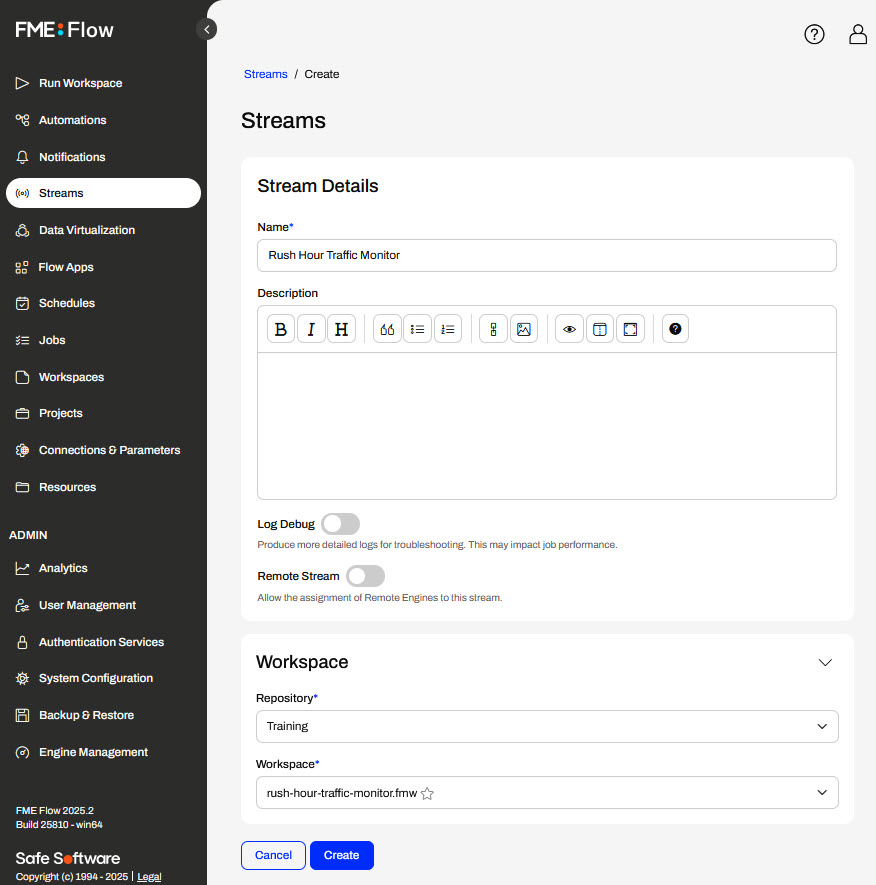
You may choose to enable Log Debug mode to enable additional logging for troubleshooting. There is a performance drawback, so this should only be used when testing your stream, not when running in production.
You can also enable Remote Stream and select the Remote Engine Service you would like to dedicate to your stream. Remote Engine Services are specialized FME Flow installations that allow you to run workspaces on engines in close proximity to your data, such as on other servers, cloud applications, or outside of your network.
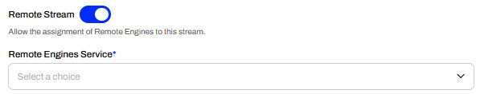
Once you create the stream, it will immediately start in the running state. However, the workspace will not begin processing as a job until you assign an engine.
Assign an Engine to a Stream
The Assigned Engines section lists the FME Flow Engines assigned to continuously run your stream workspace. If you do not have an engine assigned to the stream, clicking Manage opens another window to select one.
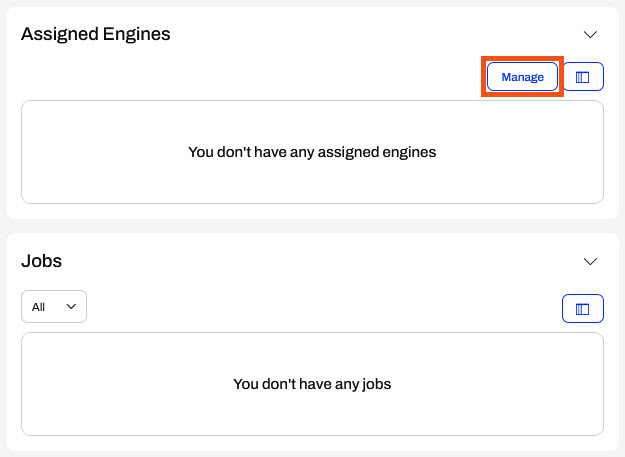
A window will appear, allowing you to select the engine to assign to your stream. This engine will only run this stream and will not be available for use in running other jobs on your FME Flow.
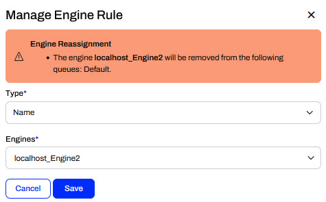
If your FME Flow user account does not have permissions to access and manage engines, you will not see the Manage button; instead, you will see an error message.
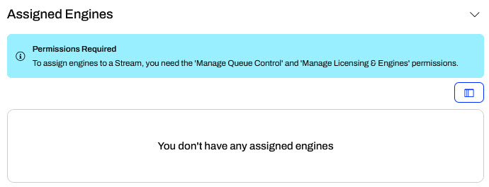
You will need to contact your FME Flow administrator to either grant you the 'Manage Queue Control' and 'Manage Licensing & Engines' permissions or assign an engine to your stream for you.
You can scale processing throughput by assigning multiple engines to the Stream. The engines run the same job simultaneously. The number of jobs a stream runs is equal to the number of engines assigned to the stream. For more information on how multiple engines process stream data, see Windowing Across Multiple FME Engines.
Stream Jobs
Once you assign an engine to your stream, it will begin running your workspace, creating a job and a log for the stream. You may have to refresh the page to see the job information on the stream page.
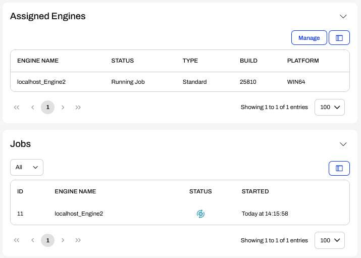
Because the engine continuously processes the workspace, the job will always appear as running until you manually stop the stream. You may click on the job to open the job log and see the detailed log information for the stream.
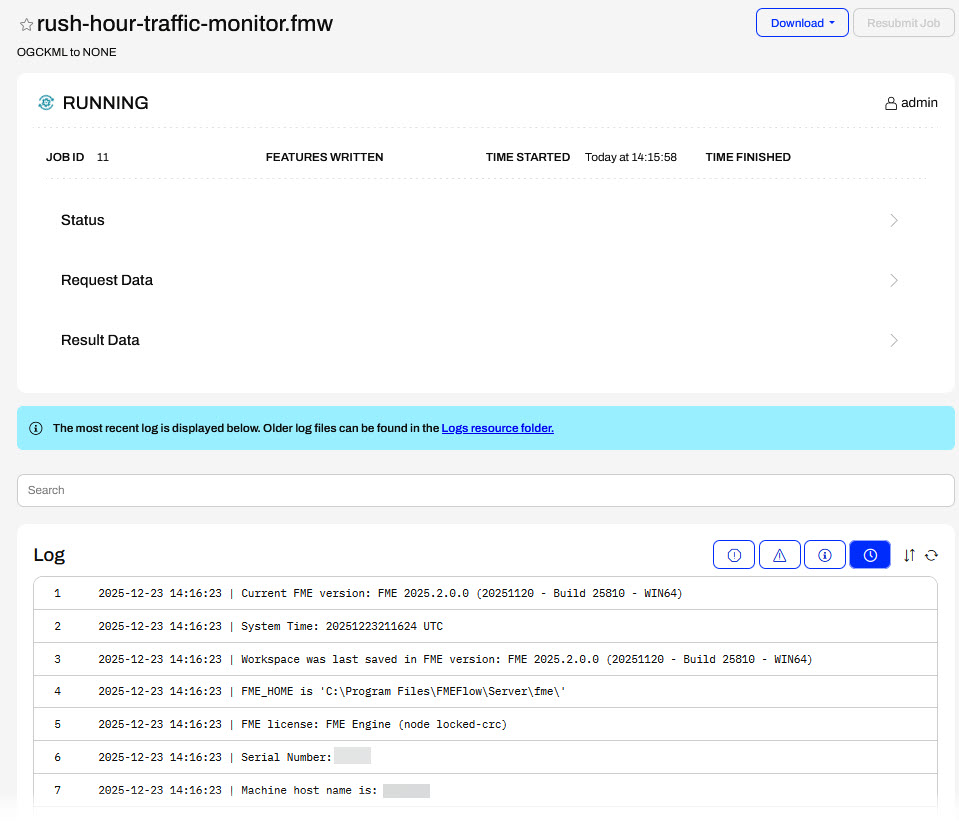
Stopping and Starting a Stream
To stop your stream, click Stop on the stream page.
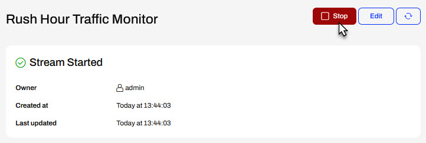
It's essential to note that once you stop your stream, the engine assigned to it remains dedicated and is not available to run other jobs in your FME Flow. To free the engine, you must use the Manage button to unassign the engine from the stream.
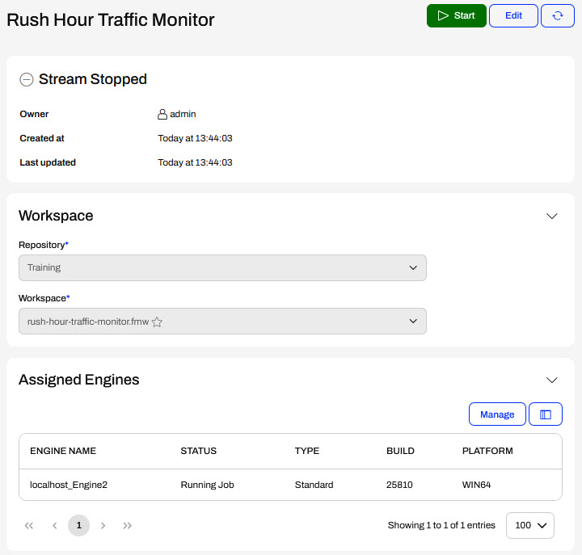
To start your stream again, click Start. Remember that the stream needs an assigned engine to run the workspace successfully.
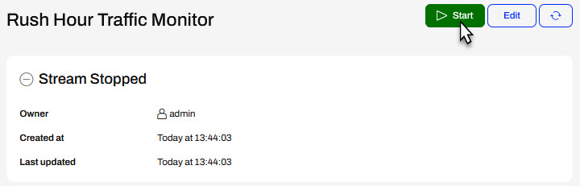
Exercise (10 minutes)
So far, you've helped Jennifer identify trucks that are outside of the City of Vancouver boundary and send alerts for those vehicles every minute. Next, you will deploy the workspace on FME Flow as a Stream to run continuously to monitor the fleet traffic.
In this exercise, you will:
Publish your workspace to FME Flow.
Deploy your workspace as a Stream on FME Flow.
Assign an engine to your Stream.
Continue with the same workspace open in FME Workbench from the previous exercise.
1) Publish to FME Flow
Click Publish to publish your workspace to FME Flow.
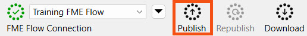
The FME Flow web connection should be created for you. If not, create a web connection with the following parameters:
Web Service: FME Flow
Connection Name: Training
FME Flow URL: http://localhost
Authentication: Basic
User Name: admin
Password: FMElearnings
Select the Training repository. Create it from New... if you need to. Rename your workspace to CoV-fleet-stream.fmw or something similar and click Next.
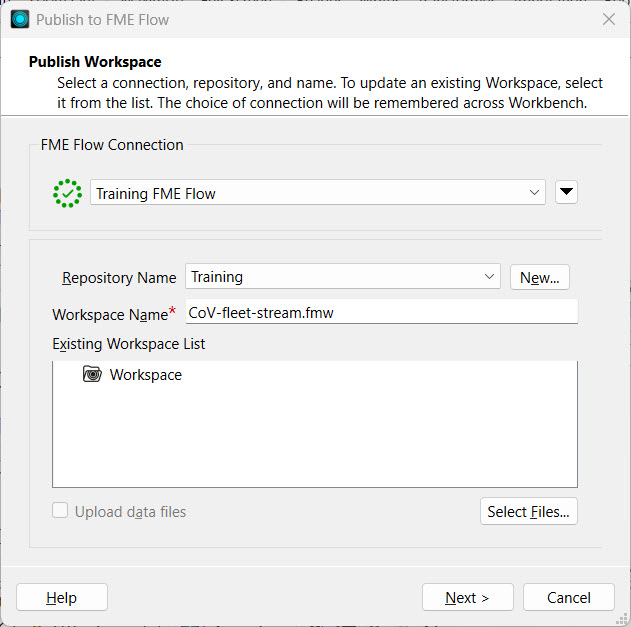
The workspace uses an Apache Kafka web connection to connect to the data stream. Select the connection to ensure it publishes to FME Flow along with the workspace.
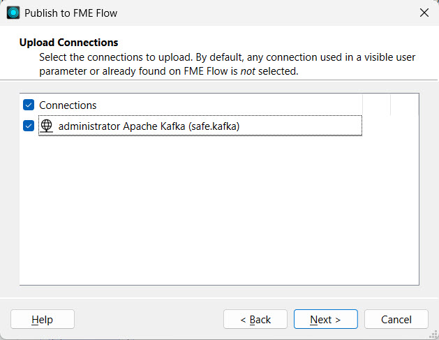
Next, select the KafkaConnector and Emailer packages that you also need to publish to FME Flow. Click Next.
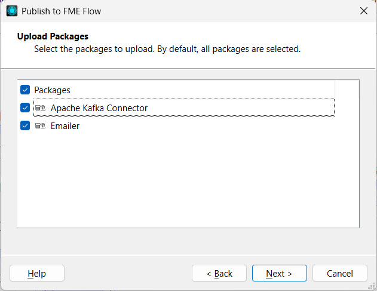
Lastly, register the workspace with the Job Submitter service and click Publish.
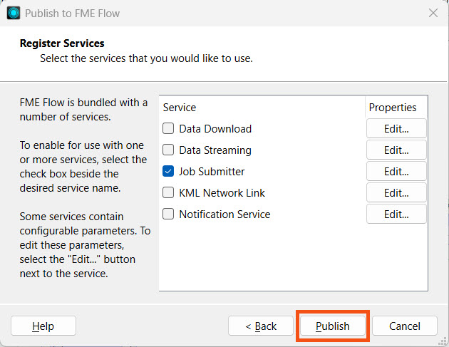
2) Create a Stream
Navigate to FME Flow at http://localhost/fmeserver in the web browser. Firefox should already be open to the FME Flow login page on your lab. Log in to FME Flow.
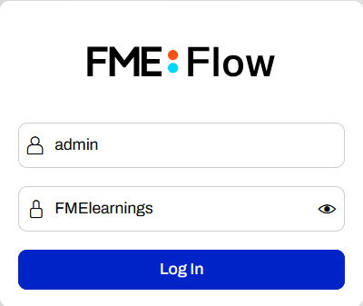
From the left side menu, open Streams and click Create.
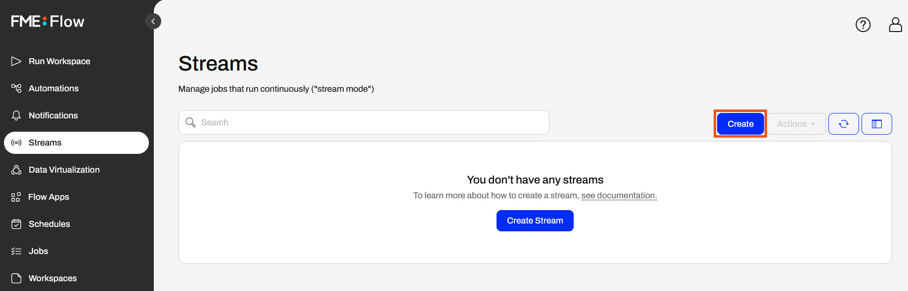
Name your stream and scroll down.
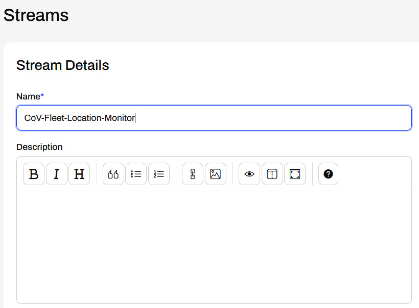
In the Workspace section, select the Training repository and the workspace you just published to FME Flow.
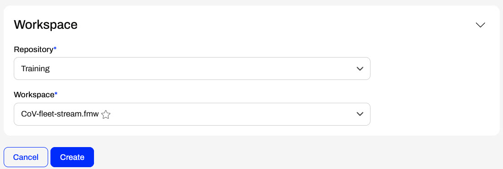
Click Create.
3) Manage Assigned Engines
Scroll down to Assigned Engines and click Manage.
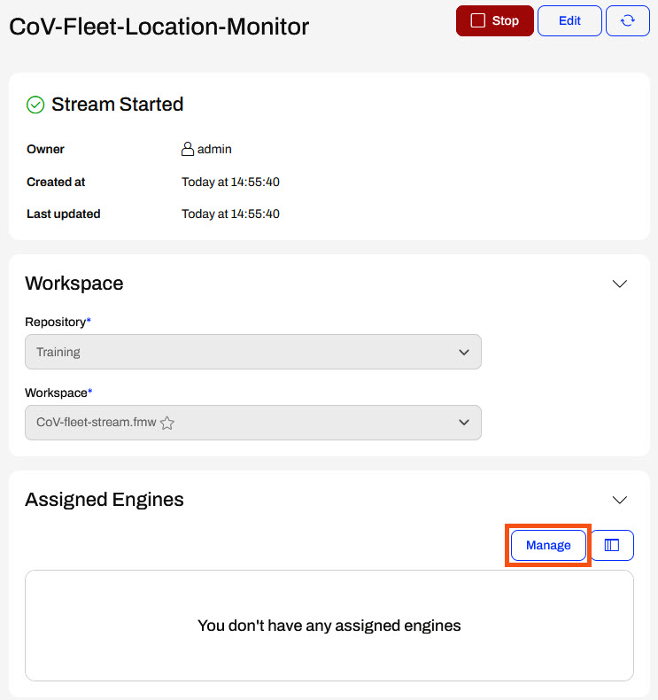
Use the Engines drop-down to select an engine to assign to the Stream. Click Save.
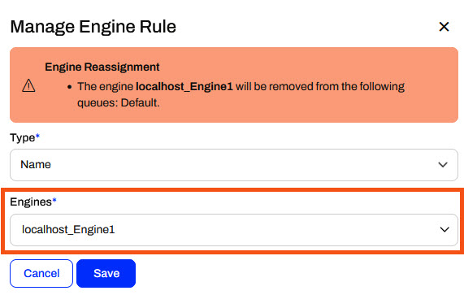
FME Flow assigns the engine to the Stream. Scroll back to the top and refresh the Stream.
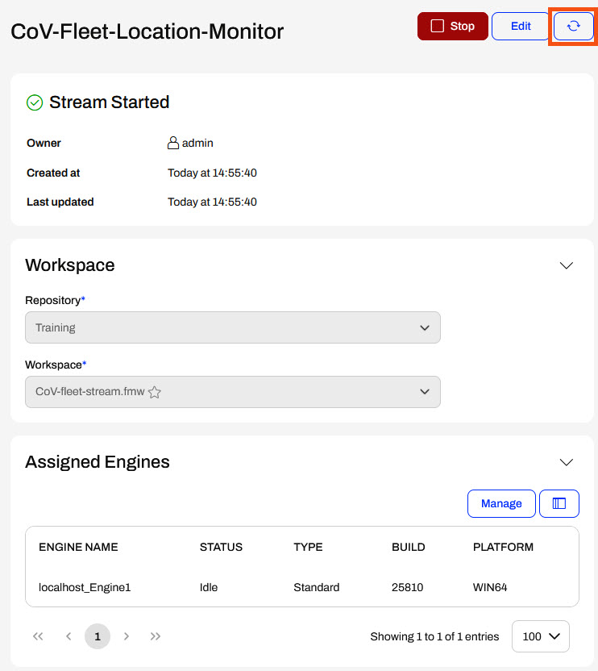
Once the page refreshes, you'll see the running job for the Stream under Jobs.
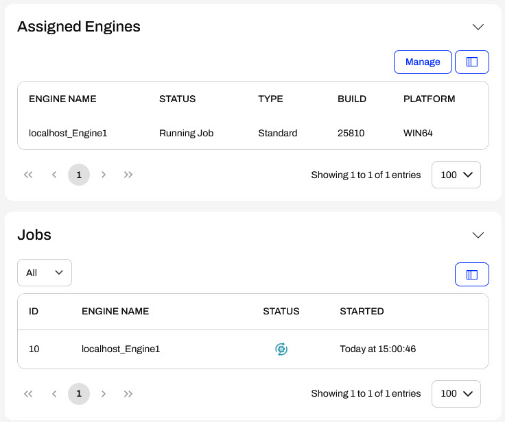
4) Check Email
After a minute, check your email for alerts of vehicles outside Vancouver.
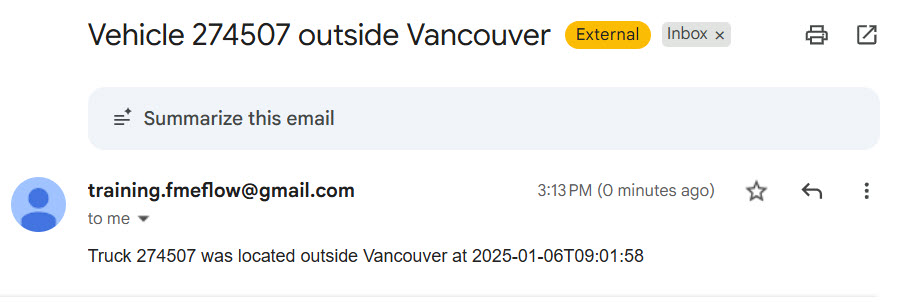
5) Stop Stream
Stop your stream.
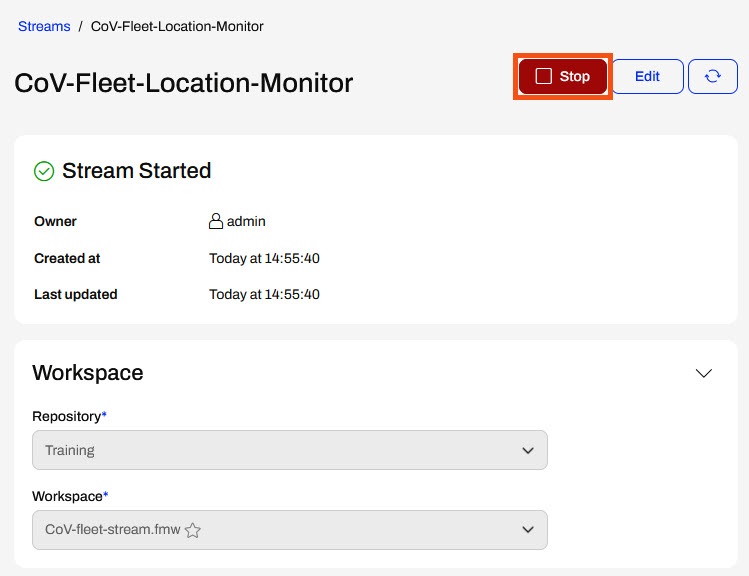
In a production environment, you will leave your Stream running. In training, we recommend stopping your recently created Stream to minimize the emails you will receive every minute for trucks outside of the City of Vancouver boundary.